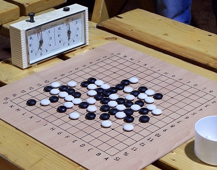

Gomoku
Fall 2018: Question 33 (use Python to write this program)
Spring 2018: Question 6 (use Python to write this program)
Fall 2017: Question 38 (use C language to write this program)
 Gomoku, also called Gobang or Five in a Row, is a strategy board game, traditionally played with Go pieces (black and white stones) on a Go board, using 15×15 of the 19×19 grid intersections (we will use a 10-by-10 grid in this exercise). Players alternate turns placing a stone of their color on an empty intersection. The winner is the first player to form an unbroken chain of five stones horizontally, vertically, or diagonally.
Write a program to check whether there is a line of 5 stones placed in a row on a 10-by-10 grid.
1 indicates the presence of a stone on a space.
0 indicates the absence of a stone on a space.
Input instruction: Input ten lines, with each line containing a total of 10 zeros and ones, separated with a space in between numbers.
Output instruction: Output the positions from which additional stones must be placed at to form a line of 5 stones in a row.
| Sample Input | Explanation | Expected Output |
|---|---|---|
|
0 0 0 0 0 0 0 0 1 0 0 0 0 0 0 0 1 1 0 0 0 0 0 0 0 0 1 0 0 0 0 0 0 0 0 0 1 1 1 1 0 0 0 0 1 0 1 0 0 0 0 0 0 0 0 0 0 0 0 0 0 0 0 1 0 0 0 0 0 0 0 0 0 1 0 0 0 0 0 0 0 0 1 1 1 1 0 0 0 0 0 0 0 1 0 0 0 0 0 0 |
Based on the grid on the left, a stone must be placed at any of the positions shown below (marked with an x) in order to form a line of 5 stones. 0 0 0 0 0 0 x 0 1 0 0 0 0 0 0 0 1 1 0 0 0 0 0 0 0 0 1 0 0 0 0 0 0 0 0 x 1 1 1 1 0 0 0 0 1 0 1 0 0 0 0 0 0 x 0 0 x 0 0 0 0 0 0 1 0 0 0 0 0 0 0 0 0 1 0 0 0 0 0 0 0 x 1 1 1 1 x 0 0 0 0 0 0 1 0 0 0 0 0 0 |
0 6 3 5 5 3 5 6 8 1 8 6 |